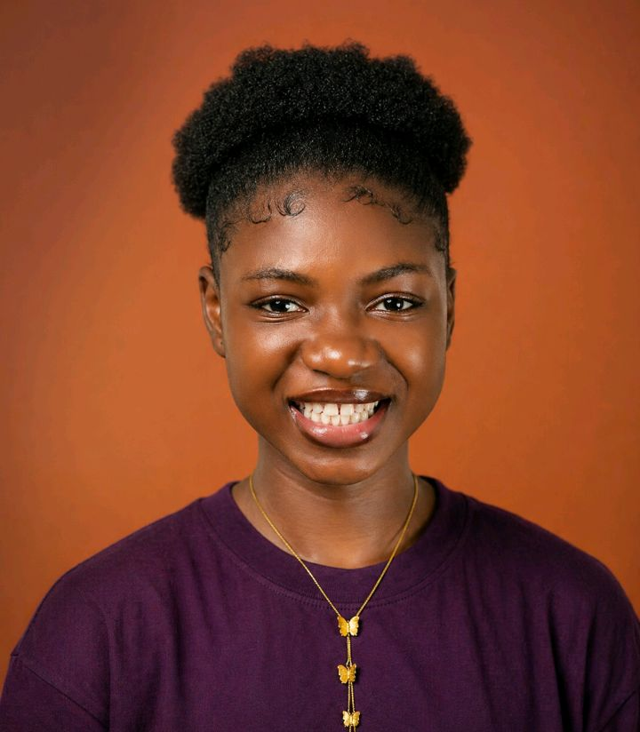
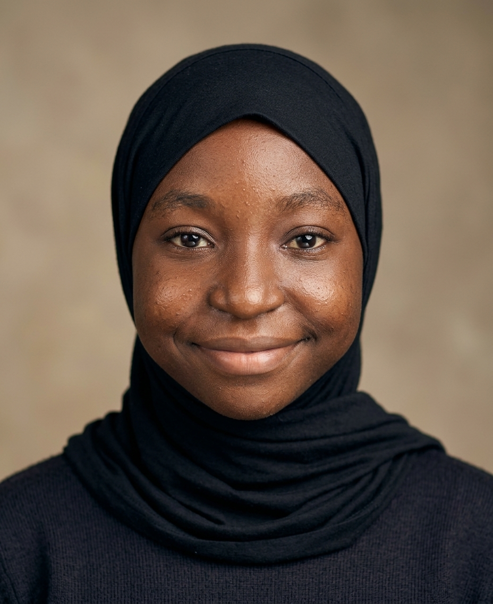
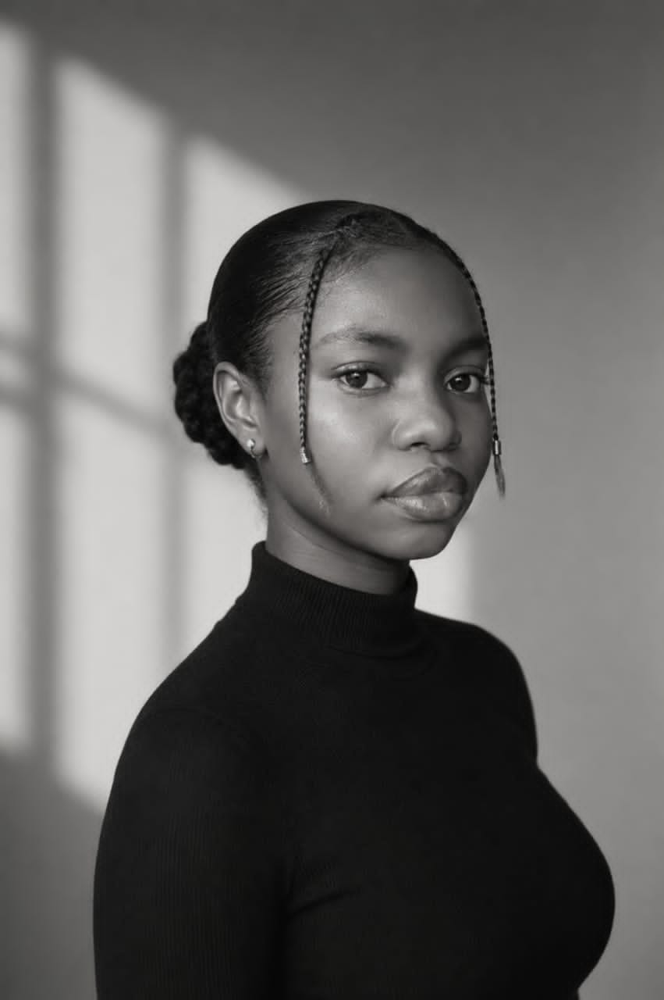
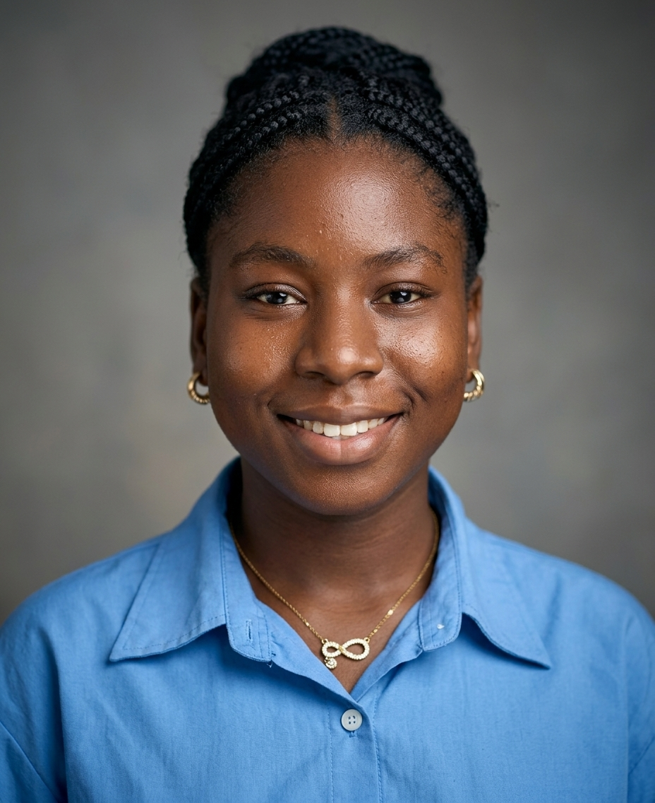
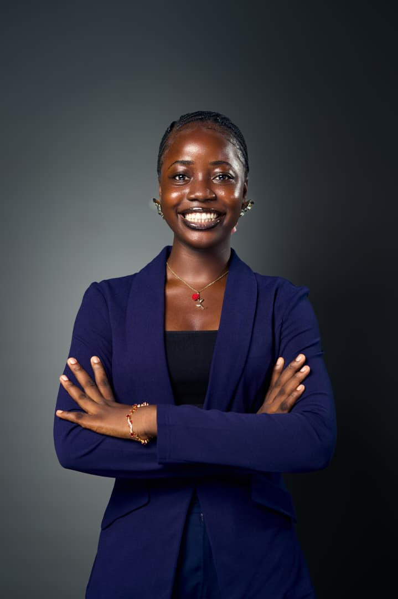
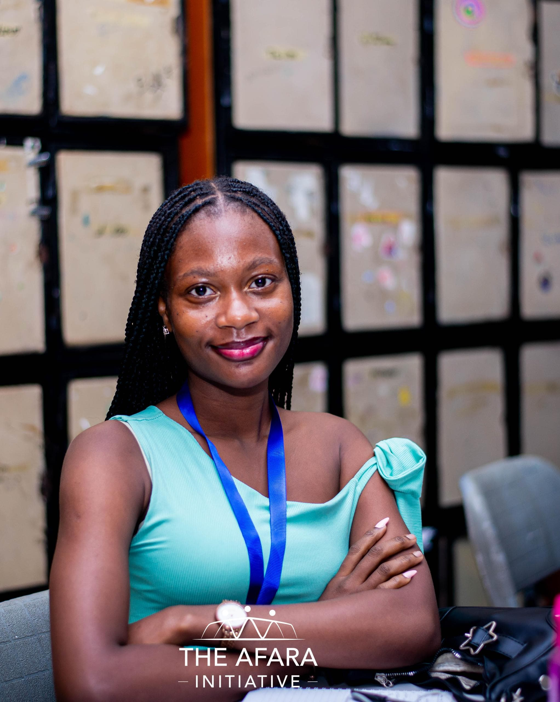
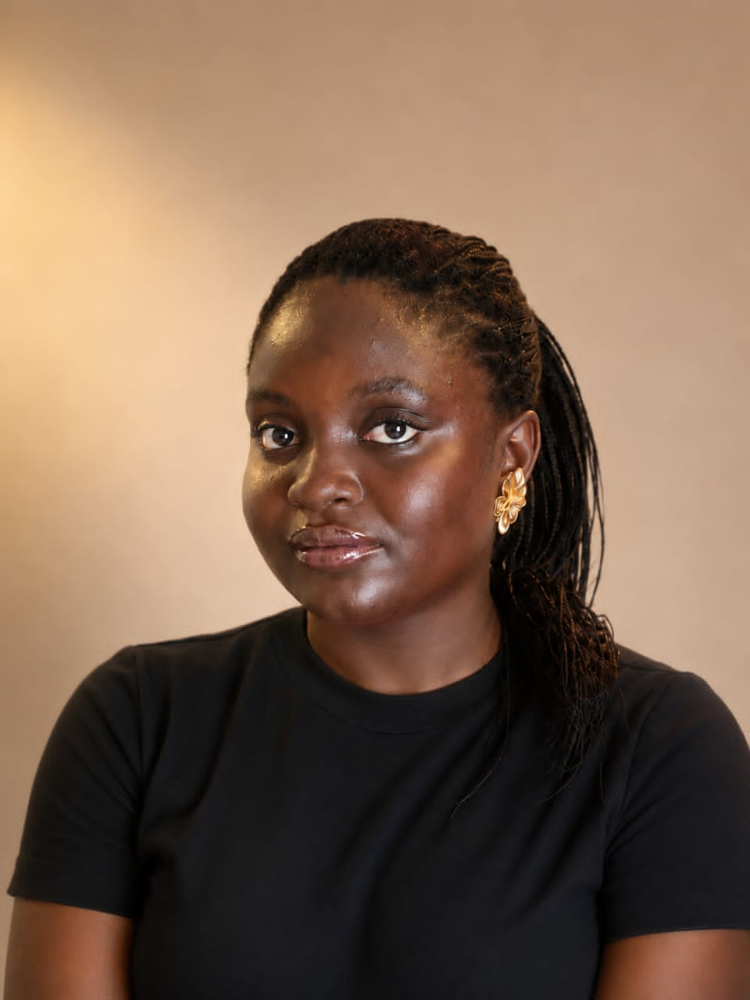

A space to be yourself
Come as you are. Share your thoughts, experiences and questions in a space built around respect and understanding.
Girls Unplugged: Bloom & Glow Circle is a global sisterhood created for girls and young women to connect, grow, express themselves, build confidence, and bloom together.
Girls Unplugged: Bloom & Glow Circle is a growing sisterhood for girls and young women who want a space where they can connect, express themselves, learn, laugh, ask questions, build confidence, and become more of who they are.
Girls Unplugged was created from a simple belief: girls should not have to figure everything out alone.
Sometimes you need someone to listen without judging. Sometimes you need encouragement when you're doubting yourself. Sometimes you simply want to laugh with other girls, learn something new, share your thoughts, or meet people who understand parts of your experience.
That is what we're building here — a space where sisterhood is intentional, growth is celebrated, and every girl is reminded that her voice matters.
Discover the CircleCome as you are. Share your thoughts, experiences and questions in a space built around respect and understanding.
Meet girls from different places, exchange experiences, encourage one another and grow together.
Explore conversations around confidence, leadership, wellbeing, technology, opportunities and life.
Girls Unplugged is still growing, and every Bloomie becomes part of the story we are creating together.
Girls are navigating school, friendships, family expectations, identity, confidence, opportunities, emotions, technology and their dreams — often all at once.
Girls Unplugged exists to create a space where those experiences can be talked about openly, where girls can learn from one another, and where nobody has to feel like she is the only one going through something.
Some things are easier to talk about when you know you are speaking with people who understand. We create room for honest, thoughtful conversations about the things girls actually experience.
The internet can connect us without always making us feel connected. Girls Unplugged is about building real friendships, support systems and a sense of belonging across borders.
Growth is not only about achievements. It is also about confidence, self-awareness, emotional wellbeing, leadership, curiosity and becoming more comfortable with who you are.
Your ideas, experiences, creativity and voice matter. We want girls to see themselves not only as people with potential, but as people capable of creating change around them.
Girls Unplugged is built around a few simple ideas that shape how we treat one another, how we grow together, and the kind of community we want to create.
Every girl deserves to be treated with dignity. We listen to different perspectives and make room for people to be themselves.
Emotional safety matters. We encourage thoughtful conversations, healthy boundaries and an environment where girls can speak without fear of being mocked or judged.
We believe growth can look different for everyone. Learning, unlearning, trying again and discovering yourself are all part of the journey.
We choose connection over comparison. We celebrate one another, show up for one another and create space for friendships to grow.
Your story and your ideas matter. We want girls to feel confident expressing themselves, asking questions and taking up space.
Where you come from does not have to define where you can go. We want girls to discover opportunities, imagine boldly and believe that more is possible.
Girls Unplugged is more than a group chat. It is a growing sisterhood with moments throughout the week designed to help girls connect, reflect, learn, laugh and simply enjoy being themselves.
We start the week with encouragement, reminders, reflections and little pushes to help every Bloomie step into the week with intention.
Start with intentionA midweek pause to check in with ourselves, talk about wellbeing, share healthy reminders and create space for honest conversations.
Pause & check inWe make room for laughter too. Fun Friday brings games, playful conversations, challenges and game nights that help Bloomies connect beyond serious conversations.
Laugh & connectWe slow down and look inward. Reflection Saturday creates a gentle space to think about the week, celebrate small wins and consider what we want to carry forward.
Reflect & resetGirls Unplugged is growing beyond one city, one school, or one country. Girls from different backgrounds can meet here, share experiences, learn from one another and build a sisterhood that crosses borders.
Our sisterhood is growing across communities and countries — and this map will grow with it.
Impact is not only measured by how many people are in a community. It can also be found in the confidence someone gains, the friendship that begins, the conversation that changes a perspective, or the girl who discovers that she is capable of more.
Creating opportunities for girls to meet, talk, laugh, share experiences and build meaningful friendships across different backgrounds.
Sisterhood starts with connection →Encouraging girls to reflect, build confidence, understand themselves better and keep becoming the person they want to be.
Growth looks different for everyone →Making room for girls to speak, share ideas, lead conversations, learn from role models and recognize the value of their own voices.
Your voice belongs here →Connecting girls with conversations, opportunities, resources and experiences that can help them imagine possibilities beyond what they already know.
There is more to discover →Meet the people helping Girls Unplugged grow, connect and create meaningful experiences for girls. Different strengths, different roles, one growing sisterhood.

Motunrayo Linda Idowu is the founder of Girls Unplugged: Bloom & Glow Circle, a growing sisterhood built around connection, self-expression, personal growth and creating meaningful experiences for girls and young women. Driven by the belief that girls should have spaces where they feel seen, heard and supported, she is passionate about turning ideas into initiatives that make a difference.
As Founder and Community Director, Motunrayo leads the vision, direction and development of Girls Unplugged. Her approach to leadership is captured in her personal motto: Action, not titles.
Meet the team →
Fareedah Idowu Bello is a nursing student at Lagos State University who enjoys learning, exploring new interests and making the most of life's experiences. Her curiosity spans science, healthcare, writing, technology, movies, anime and books. She values kindness, loyalty, family and genuine connections.
As Community and Member Engagement Lead, Fareedah contributes to creating an environment where girls can connect, participate and build meaningful relationships.
Meet the team →
Salvation Nneka Ebonne is a baker, an avid reader and a curious mind who enjoys books, music, creative work and discovering the person beyond the first impression. She appreciates thoughtful conversations and fresh perspectives.
As Programs and Activities Lead, Salvation brings her creativity and thoughtful approach to developing ideas and experiences that encourage participation, connection and personal growth within the Bloom & Glow Circle.
Meet the team →
Khadijat Oluwaseun Abdulsalam is an Environmental Health student at Lagos State College of Health Technology with an interest in environmental sustainability, community health and educating young girls about personal growth and menstrual health.
Her role at Girls Unplugged supports meaningful conversations, speaker relationships, communications and partnerships that create opportunities for girls to learn and grow.
Meet the team →Meet some of the women and young leaders who have joined Girls Unplugged to share their experiences, knowledge and perspectives with the Bloom & Glow Circle.

Accounting student, Investment Banking Analyst and 2026 NHEF Scholar
9 October 2026 · Girls & Money: Building Financial Confidence Early
Funto is a penultimate-year Accounting student at the University of Lagos and an Investment Banking Analyst at The Investment Society. She is also a Girl in Bloom Global Ambassador, a UN Millennium Fellow and a 2026 NHEF Scholar.
View speaker archive →
Computer Science student, founder of Bloom in STEM and Ashoka Young Changemaker
9 October 2026 · Girls & Money: Building Financial Confidence Early
Pelumi Oyetade is a Computer Science student and the founder of Bloom in STEM. As an Ashoka Young Changemaker involved in encouraging girls to engage with STEM, she is interested in creating more opportunities for young people to explore science, technology and their potential.
View speaker archive →
Nursing student, youth advocate and social impact enthusiast
September 2026 · What Am I Doing With My Life? Your Future Self Is Watching
Inioluwa Oyabambi is a nursing student, youth advocate and social impact enthusiast. She is also a co-founder of Book Bridge Foundation, reflecting her interest in initiatives that support people and create opportunities for positive change.
View speaker archive →Girls Unplugged is made up of girls with different backgrounds, personalities, dreams and experiences. Their voices are at the heart of this sisterhood.
When Bloomies share their reflections, you'll find them here.
There is room here for your voice, your questions, your ideas, your laughter, your dreams and everything you're still becoming.
Come as you are. Meet other girls. Find your people. Learn, connect, grow and bloom with us.